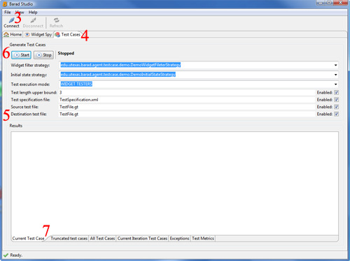
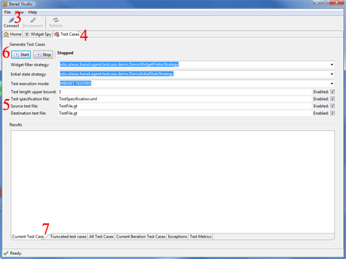

This archive contains a complete example of how the concrete agent of Barad is used for testing GUI of applications written with the SWT library. The goal of this demo is to give an overview of how the GUI testing process is accomplished and uses as a subject a set of simple GUI applications. The archive contains the following files:
| File name | Description |
| guitestingdemos.jar | Contains the subject applications |
| baradstudio.jar | Client that controls the testing process |
| baradagent.jar | Server that performs the testing process |
| BaradAgent.dll | JVMTI agent that starts the test server |
| TestSpecification.xml | Specification with user inputs |
| lib | Folder with third party libraries |
| BaradStudio.bat | Batch script that starts the test client |
| SimpleCalculator.bat | Batch script that starts the first example |
| SimpleCalculator$$SaveToDB.bat | Batch script that starts the second example |
| SimpleCalculator$$WithValidation.bat | Batch script that starts the third example |
This section provides step by step instructions on how to run each of the three examples in this demo. Each example is a GUI application which is tested with our tool. These applications represent iterative development of a GUI and aim to demonstrate how our tool generates, executes, evaluates, and reuses test cases. By reuse of test cases we mean utilizing of tests generated for a version of the GUI which has fewer features for another version which has additional features. Detailed descriptions of our test reuse techique can be found here. A description of the Barad GUI testing framework can be found here and here. To run the examples included in this demo unzip the archive and follow the instructions below:
The GUI presented in this example is an application (202 lines of code) that we developed. It calculates the unit price rounded to the closest integer given a total amount and quantity. This version of the GUI represents the base program. No validity checks are performed for the inputs in the total amount and quantity fields, which accept integer values. Hence, it is possible to enter an unrealistic negative value as a total amount or quantity. Note that the Rounded unit price text box is read only. To run this example do the following steps: 1. Run BaradStudio.bat 2. Run SimpleCalculator.bat 3. In Barad Studio select 'Connect' 4. Go to the 'Test Cases' tab 5. Unselect the checkbox 'Source test file' 6. Select the 'Play' button 7. Explore the results in the 'Results' section 8. Close the console windows of the Simple Calculator and Barad Studio  After running this examples the tests generated for the GUI will be stored in the file 'TestFile.gt'
The GUI presented in this example is the Persisting Calculator. It is generated by composing the Simple Calculator (i.e. the base program) with a persistence feature. The persistence feature mimics the functionality of saving the calculation result. This feature is composed of a single button, selecting of which performs a void action, simulating a non-interacting feature,i.e. the new functionality does not interact with the previous. Hence, the Persisting Calculator is a composition of the base program with an orthogonal feature. To run this example do the following steps: 1. Run BaradStudio.bat 2. SimpleCalculator$$SaveToDB.bat 3. In Barad Studio select 'Connect' 4. Go to the 'Test Cases' tab 5. Unselect the checkbox 'Destination test file' 6. Select the 'Play' button 7. Explore the results in the 'Results' section 8. Close the console windows of the Persisting Calculator and Barad Studio  After running this examples the tests generated for the Simple Calculator are reused and new tests that cover the added functionality are generated.
The GUI presented in this example is the Validating Calculator. The application has the same structure as the Simple Calculator in the first example The Validating Calculator is composed of the Simple the base program and a validation feature. The Simple Calculator has two text boxes that accept any numeric value. The validation feature ensures that only non-negative values are populated in the Total amount and Quantity fields. Note that the validation feature interacts with the Simple Calculator by changing the valid inputs for its data widgets. To run this example do the following steps: 1. Run BaradStudio.bat 2. SimpleCalculator$$SaveToDB.bat 3. In Barad Studio select 'Connect' 4. Go to the 'Test Cases' tab 5. Unselect the checkbox 'Destination test file' 6. Select the 'Play' button 7. Explore the results in the 'Results' section 8. Close the console windows of the Persisting Calculator and Barad Studio After running this examples the tests generated for the Simple Calculator are reused and new tests that cover the added functionality are generated.
The GUI presented in this example is the Validating Calculator. The application has the same structure as the Simple Calculator in the first example The Validating Calculator is composed of the
Simple the base program and a validation feature. The Simple Calculator has two text boxes that accept any numeric value. The validation feature ensures that only non-negative values are populated
in the Total amount and Quantity fields. Note that the validation feature interacts with the Simple Calculator by changing the valid inputs for its data widgets. To run this example do the following steps:
1. Open TestSpecification.xml and replace "